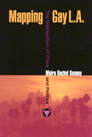

How gays and lesbians put themselves on the map of Los Angeles
How gays and lesbians put themselves on the map of Los Angeles


 How gays and lesbians put themselves on the map of Los Angeles
How gays and lesbians put themselves on the map of Los Angeles

|  |
Mapping Gay L.A.The Intersection of Place and PoliticsMoira Rachel Kenneypaper EAN: 978-1-56639-884-8 (ISBN: 1-56639-884-3) |
"This is a fresh and fascinating approach to both social history and the geography of America's most cutting-edge and least understood city. This book sparkles with stories of Los Angeles' gay/lesbian and AIDS street activism through the decades, as well as serendipitous or smart strategies for staking spaces of our own—so crucial to our liberation. LA's leading role in U.S. gay history is finally claimed!"
—Torie Osborn, former Executive Director, LA Gay and Lesbian Center and the National Gay and Lesbian Task Force; author of Coming Home to America
In this book, Moira Kenney makes the case that Los Angeles better represents the spectrum of gay and lesbian community activism and culture than cities with a higher gay profile. Owing to its sprawling geography and fragmented politics, Los Angeles lacks a single enclave like the Castro in San Francisco or landmarks as prominent as the Stonewall Inn in Greenwich Village, but it has a long and instructive history of community building.
By tracking the terrain of the movement since the beginnings of gay liberation in 1960’s Los Angeles, Kenney shows how activists lay claim to streets, buildings, neighborhoods, and, in the example of West Hollywood, an entire city. Exploiting the area's lack of cohesion, they created a movement that maintained a remarkable flexibility and built support networks stretching from Venice Beach to East LA. Taking a different path from San Francisco and New York, gays and lesbians in Los Angeles emphasized social services, decentralized communities (usually within ethnic neighborhoods), and local as well as national politics. Kenney's grounded reading of this history celebrates the public and private forms of activism that shaped a visible and vibrant community.
Excerpt available at www.temple.edu/tempress
"Mapping Gay L.A. will make a significant contribution to our knowledge in a number of ways: it reinforces the L.A. dimension to a gay/lesbian story overly dominated by San Francisco and New York; it brings lesbian issues into constant interplay with the broader concerns of the gay movement; it demonstrates how culture and space are intertwined. Kenney approaches her topic from a political activist's perspective, appropriate to the period of gay history. She is in command of her subject matter and the case studies are exemplary."
—Dana Cuff, Professor, Department of Architecture and Urban Design, UCLA
"Kenney's much-needed book restores L.A. to its rightful place in the history of lesbian and gay America. It's highly readable and expertly told. The book's emphasis on place and political activism banishes the silences that have shrouded an important social revolution that is still going on."
—Michael Dear, Director of the Southern California Studies Center at USC and author of The Postmodern Urban Condition
List of Maps
Foreword – Robert Dawidoff
Acknowledgments
1. Locating the Politics of Difference
2. Inclusion and Exclusion in West Hollywood
3. Beyond Gentrification: Social Services and the Redevelopment of Hollywood Boulevard
4. Separate Space and Separatism: Lesbian Culture and Community
5. Out of the Bars and into the Streets: Direct Action from Liberation to Transformation
6. The Remapped City
Notes
Index
Moira Rachel Kenney is the Research Director at the Institute of Urban and Regional Development at the University of California, Berkeley.
Sexuality Studies/Sexual Identity
Urban Studies
History
American Subjects, edited by Robert Dawidoff.
The American Subjects series, edited by Robert Dawidoff, will introduce readers to unfamiliar areas or figures in American culture. All of the titles in this series will be the first on their particular subject. Each will tell an unfamiliar story and will emphasize the cultural side of how Americans have lived and what they have created or thought.
© 2015 Temple University. All Rights Reserved. This page: http://www.temple.edu/tempress/titles/1404_reg.html.